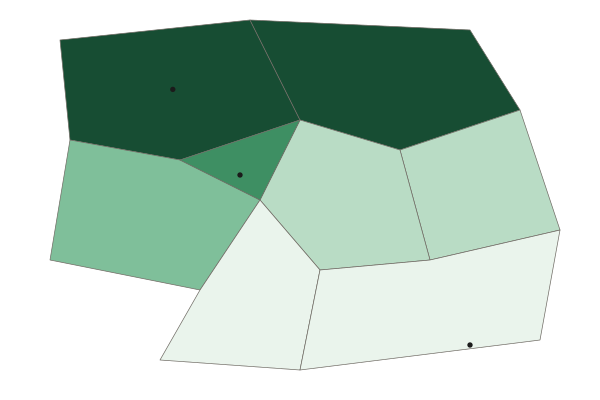

Regional Analysis
Regions group places that share something.
Part 1 · Hook
Why this matters
Part 2 · Before you start
What this builds on
Part 3 · Prerequisite check
Quick check before you start
1. Movements of goods, people and money between places are called what?
- Flows
- Site
- Absolute location
- Elevation
Show the answer
Flows are movements between places.
- Correct: Flows:
- Site:
- Absolute location:
- Elevation:
2. Contact between places falls as the distance between them grows. What is this called?
- Distance decay
- Time-space compression
- Clustering
- Dispersal
Show the answer
Distance decay is the fall in contact with distance.
- Correct: Distance decay:
- Time-space compression:
- Clustering:
- Dispersal:
3. Which scale of analysis looks at part of a country?
- Local
- National
- Regional
- Global
Show the answer
The local scale covers a part of a country: a province, city or neighborhood.
- Correct: Local:
- National:
- Regional:
- Global:
Part 4 · See it
See it first

Part 5 · Step by step
How it works, step by step
- Places share a measurable trait, such as a languagegeographers group them into a formal region
- Places are tied to a center by flows, such as commutersthey form a functional region, strongest near the center
- People believe places belong togetherthey form a perceptual region, whose edges differ from person to person
- Traits, ties and beliefs fade out graduallyregions have transition zones and edges that can overlap and be contested
Part 6 · Key ideas
Key ideas
- A region is an area grouped together because its places share something. Regions exist at every scale, from a neighborhood to a group of countries.
- A formal region shares a measurable trait (language, climate, a main crop). A functional region is tied to a center by flows (commuters, deliveries). A perceptual region rests on beliefs ("the South").
- Region edges are usually transition zones, where one region fades into another, like the Sahel between the Sahara and grassland.
- Because people draw regions for different purposes, regions can overlap and their edges can be contested.
Part 7 · Misconception
A common mistake
The wrong idea: Regions have exact borders, like countries.
What actually happens: Most regions fade out across transition zones, and their edges depend on the trait measured and on who draws them. "The Middle East" and "the South" have no single agreed edge.
Part 8 · Check yourself
Check yourself
Exam-style questions. Anything you miss goes into your review queue.
Map
Where is "the North" of Country A? A survey of residents

Residents who say their province is in "the North" (percent, invented survey)
- Under 20%
- 20% to 39%
- 40% to 59%
- 60% to 79%
- 80% or more
1. What kind of region does this survey map?
- A perceptual region, defined by what people believe
- A formal region: it is defined by one trait that is measured
- A functional region: it is organized around a center
- A transition zone: it is defined by a change in climate
Show the answer
Perceptual (vernacular) regions are defined by people's feelings and beliefs, so surveys are a good way to map them.
- Correct: A perceptual region, defined by what people believe: Right: the region exists in people's minds, so it is measured by asking them.
- A formal region: it is defined by one trait that is measured: A formal region rests on a measured trait, such as a language most people speak; this rests on opinions.
- A functional region: it is organized around a center: Nothing here is organized around a center or tied by trips to it.
- A transition zone: it is defined by a change in climate: The survey is about what people believe, not about climate.
2. Describe the edge of "the North" shown on this map.
- Sharp: each province is either fully in the region or fully out of it, with no middle
- Fuzzy: in the Central Valley and Western Uplands, residents are split
- It follows the South Coast, where most people say that they belong to the North
- It is a straight line that a government drew across the country
Show the answer
Regions often have transition zones at their edges, where the trait or belief that defines them fades.
- Sharp: each province is either fully in the region or fully out of it, with no middle: Several provinces fall in the middle classes, so the edge is not sharp.
- Correct: Fuzzy: in the Central Valley and Western Uplands, residents are split: Right: provinces in the middle classes form a transition zone, where the region fades out.
- It follows the South Coast, where most people say that they belong to the North: The South Coast is in the lowest class.
- It is a straight line that a government drew across the country: The survey measures beliefs; no government line appears.
3. Which province is most clearly at the heart of "the North"?
- The Central Valley
- The South Coast
- The Northern Hills
- The Capital Region
Show the answer
The heart of a perceptual region is where the most people agree they belong.
- The Central Valley: The Central Valley is in a middle class: residents are split.
- The South Coast: The South Coast is in the lowest class, under 20%.
- Correct: The Northern Hills: Right: it is in the top class, 80% or more.
- The Capital Region: The Capital Region is in the second-lowest class.
4. In Quebec, Canada, a large majority of people speak French as their first language. Which kind of region is Quebec in this sense?
- A functional region
- A perceptual region
- A transition zone
- A formal region
Show the answer
A formal (uniform) region shares one or more measurable traits, such as language, climate or a main crop.
- A functional region: A functional region is tied to a center by flows, not defined by a shared trait.
- A perceptual region: A perceptual region rests on beliefs; language can be measured.
- A transition zone: A transition zone is the fuzzy edge of a region, not the region itself.
- Correct: A formal region: Right: a formal region shares a measurable trait, here the main language.
5. Which is the best example of a functional region?
- The area a Denver newspaper delivers to each morning
- The area where most people speak Spanish in the United States
- The area Americans call "the Midwest"
- The area where corn is the main crop in the United States
Show the answer
Functional regions are organized around a center: a newspaper, an airport, a store, a city.
- Correct: The area a Denver newspaper delivers to each morning: Right: it is defined by deliveries from one center, Denver.
- The area where most people speak Spanish in the United States: A shared language makes a formal region.
- The area Americans call "the Midwest": A region defined by what people call it is perceptual.
- The area where corn is the main crop in the United States: A shared main crop makes a formal region.
6. Compare a formal region and a functional region.
- Both are defined by what people believe about a place
- A formal region is tied to a center, whereas a functional region shares a trait
- Formal regions share a trait, whereas functional regions are tied to a center
- Both have sharp edges that stay fixed as transport and trade change over time
Show the answer
A compare answer speaks of both: formal by a shared trait, functional by ties to a center.
- Both are defined by what people believe about a place: Beliefs define perceptual regions, not these two.
- A formal region is tied to a center, whereas a functional region shares a trait: This swaps the two definitions.
- Correct: Formal regions share a trait, whereas functional regions are tied to a center: Right: it says something about both and names the difference.
- Both have sharp edges that stay fixed as transport and trade change over time: Both kinds usually have fuzzy edges, and functional regions change as links change.
Part 9 · Summary
Summary
Part 10 · Up next
What comes next
Part 11 · Connections